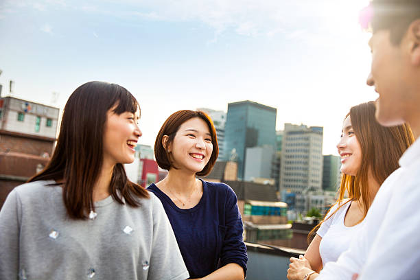
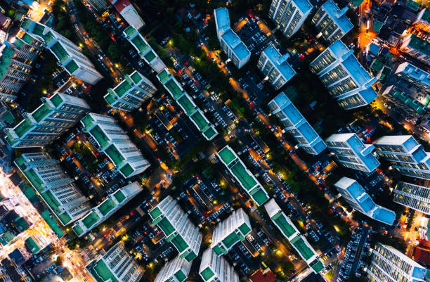

Welcome to South Korea
Split by a hair-trigger border, the Korean Peninsula offers the traveller a dazzling range of experiences, beautiful landscapes and 5000 years of culture and history.
Welcoming hospitality
Decorum plays a major role in Korean people’s generosity to outsiders, and their instinctive graciousness possesses a highly endearing quality. Helpfulness abounds, whether it’s at a tourist office, asking someone for directions or finding yourself deep in a conversation with a stranger. Time-honoured Confucian principles have set a template for strong civic pride in a society that is introspective, perhaps, but also decorous and affirmative. You may pass glorious landscapes and gaze out across dazzling seas but don't forget, half of your travel journey will be about the people, and the Korean tribe are a joy to be among.
Urban Buzz
Korea might be known as the Land of the Morning Calm, but dive into its capital Seoul, the powerhouse of Asia’s third-largest economy, and serenity may be the last thing you’ll perceive. This round-the-clock city is constantly in motion, with a work-hard, play-hard mentality that epitomises the nation’s indefatigable, can-do spirit. You can hardly turn a corner without stumbling across a helpful tourist information booth, a bustling subway station or a taxi in this multifaceted metropolis where meticulously reconstructed palaces rub shoulders with teeming night markets and dramatically modern architecture.
Idyllic Countryside
South Korea’s compact size and superb transport infrastructure mean that tranquillity is always within easy reach of urban sprawl. Hike to the summits of craggy mountains – some of which transform into ski slopes come winter – enveloped within densely forested national parks. Get further off the beaten path than you thought possible by sailing to remote islands, where farming and fishing folk welcome you into their homes or simple seafood cafes. Gaze up at the distant stars from serene villages surrounded by rice fields, sleeping in rustic hanok (traditional wooden house) guesthouses.
Festivals & Food
Rest assured the ROK also knows how to rock. A packed calendar of festivals and events means there’s almost always a celebration of some sort to attend wherever you are – it might be Boryeong for its mud fest, or Gwangju for its Biennale or its annual salute to that most Korean of foods: kimchi. Koreans are proud of their culinary culture and rightly so – there's a tantalising array of dishes, flavours, aromas and textures in the local cuisine, to be washed down with plenty of toasting involving a head-spinning array of alcoholic concoctions.
Highlights
-

- Changdeokgung
- Winter Sports
- Boryeong Mud Festival
- Hwaseong Fortress